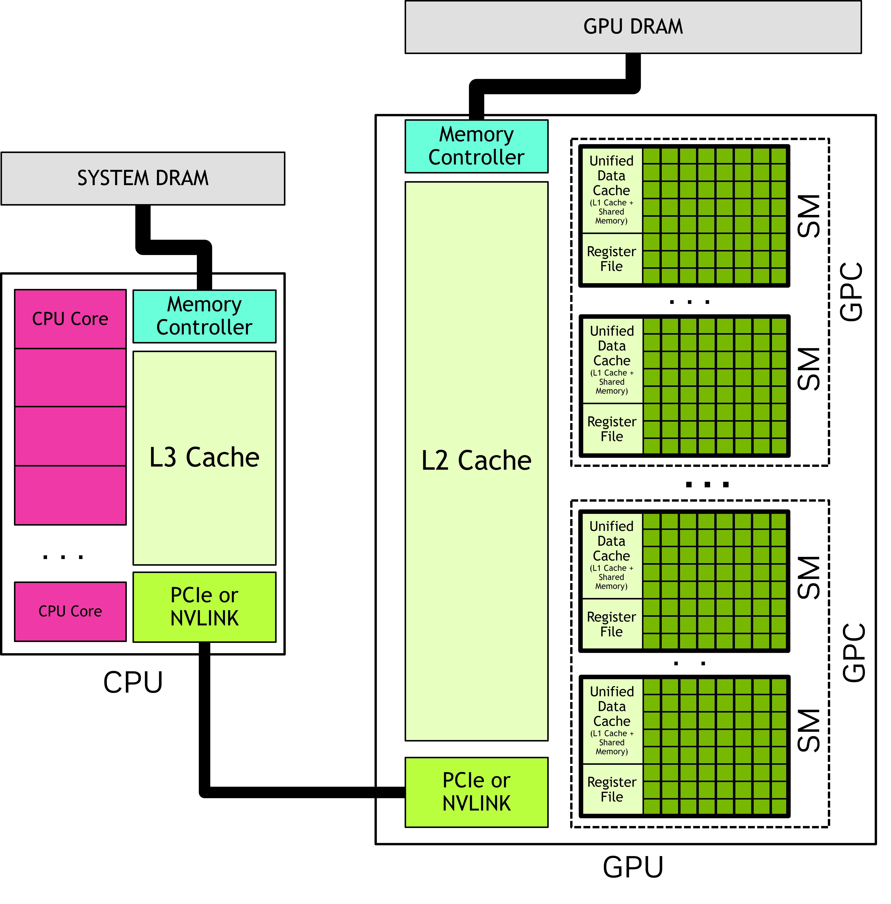
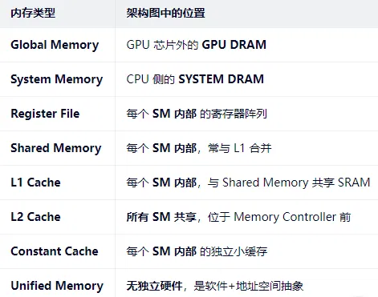

# 前言
本篇是介绍 GPU 的存储硬件。资料来源于 官网 CUDA Programming Guide。本文会比官网教程简洁一些，去掉一些我不太感兴趣的内容（任性）。
作为初学者，错误在所难免，还望不吝赐教。
# GPU Memory
在现代计算系统中，有效利用内存与最大限度地利用执行计算的逻辑单元同样重要。异构系统拥有多个内存空间，而图形处理器（GPU）除了缓存之外，还包含多种类型的可编程片上内存。

# Global Memory（全局内存）
- 物理本质：GPU 芯片外的 DRAM 芯片（即显存，VRAM）
- 别名：GPU DRAM、Device Memory
- 访问范围：所有 SM（Streaming Multiprocessors）均可访问
- 特点：
- 容量大（如 8GB–24GB）
- 延迟高，但带宽极高（通过宽总线）
- 在 CUDA 编程中通过 cudaMalloc () 分配
- 在架构图中的位置
- 位于 GPU 芯片外部，通过 Memory Controller 连接到 GPU 核心，通常标注为 "GPU DRAM" 或 "Global Memory"。
# System Memory / Host Memory（系统内存 / 主机内存）
- 物理本质：CPU 旁边的 DDR4/DDR5 内存条
- 访问者：CPU 可直接访问；GPU 需通过 PCIe 或 NVLink 访问（速度慢）
- 在统一虚拟地址空间下：与 GPU 全局内存共用一个地址空间，但物理分离
- 在架构图中的位置：
位于 CPU 一侧，通过 PCIe/NVLink 总线连接到 GPU，通常标注为 "SYSTEM DRAM" 或 "Host Memory"。
# On-Chip Memory（片上内存）—— 属于每个 SM
# (a) Register File（寄存器文件）
- 归属：每个 SM 独有
- 分配单位：每个线程（thread）
- 用途：存储线程的局部变量（由编译器自动分配）
- 特点：
- 速度最快（零延迟访问）
- 容量有限（如每个 SM 有 65536 个 32-bit 寄存器）
- 线程块能否被调度到 SM，取决于寄存器是否够用
- 在架构图中的位置：
位于 每个 SM 内部，紧邻 CUDA Core / FP32 ALU，通常标为 "Register File"。
# (b) Shared Memory（共享内存）
- 归属：每个 SM 独有
- 分配单位：每个线程块（thread block）
- 用途：线程块内线程间通信、数据重用（如矩阵分块）
- 特点：
- 速度极快（接近寄存器）
- 容量小（通常 64KB–164KB per SM），可与 L1 缓存动态划分
- 程序员显式管理（
__shared__关键字） - 在架构图中的位置：
位于 SM 内部，与 Register File 并列，常标为 "Shared Memory" 或包含在 "Unified Data Cache" 模块中（因与 L1 共享物理存储）。
# Caches（缓存）
# (a) L1 Cache（一级缓存）
- 归属：每个 SM 独有
- 物理实现：与 Shared Memory 共享同一块 SRAM（称为 Unified Data Cache）
- 用途：缓存 global memory 的数据（可配置为更多 L1 或更多 Shared Memory）
- 在架构图中的位置：
通常与 Shared Memory 合并表示为 "Unified Data Cache" 或 "L1/Shared Memory" 模块，位于 SM 内部。
# (b) L2 Cache（二级缓存）
- 归属：整个 GPU 共享
- 用途：缓存所有 SM 对 global memory 的访问，减少 DRAM 访问次数
- 容量：几 MB 到几十 MB（如 RTX 4090 有 72MB L2）
- 在架构图中的位置：
位于 所有 SM 之外、GPU DRAM 之前，通常画成一个大的 "L2 Cache" 模块，连接所有 SM 和 Memory Controller。
# (c) Constant Cache（常量缓存）
- 归属：每个 SM 独有
- 用途：缓存标记为
__constant__的只读数据（如 kernel 参数） - 特点：小容量、广播式访问、低延迟
- 在架构图中的位置：
通常在 SM 内部单独标出，或作为 L1 之外的一个小模块，标为 "Constant Cache"。
# Unified Memory（统一内存）
- 注意：这不是一种 “物理内存”，而是一种编程模型 + 硬件 / 运行时支持机制
- 作用：让 CPU 和 GPU 使用同一个指针访问数据，系统自动迁移数据
- 底层仍使用：System Memory + Global Memory（物理上仍是两块）
- 在架构图中：不对应具体硬件模块，但依赖 统一虚拟地址空间（Unified Virtual Addressing, UVA） 和 页迁移引擎（Page Migration Engine），这些通常由 MMU（内存管理单元） 和 IOMMU 支持，在高级架构图中可能不显式画出。
# 总结：

# 后记
本博客目前以及可预期的将来都不会支持评论功能。各位大侠如若有指教和问题，可以在我的 github 项目 或随便一个项目下提出 issue，并指明哪一篇博客，看到一定及时回复！